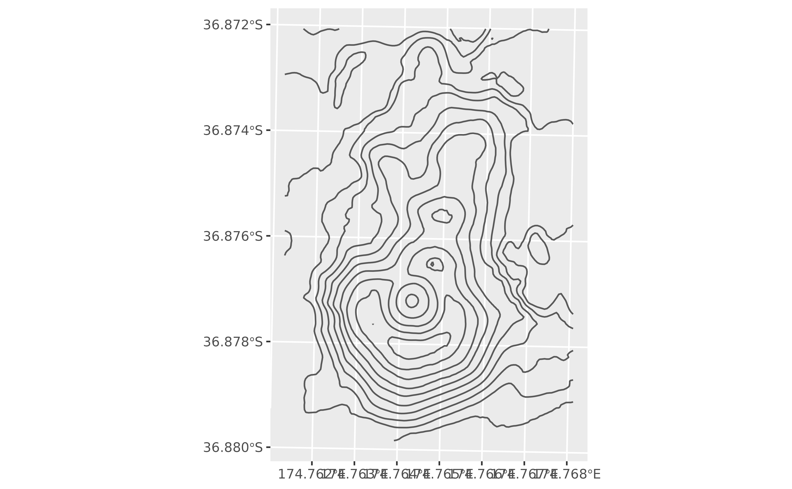
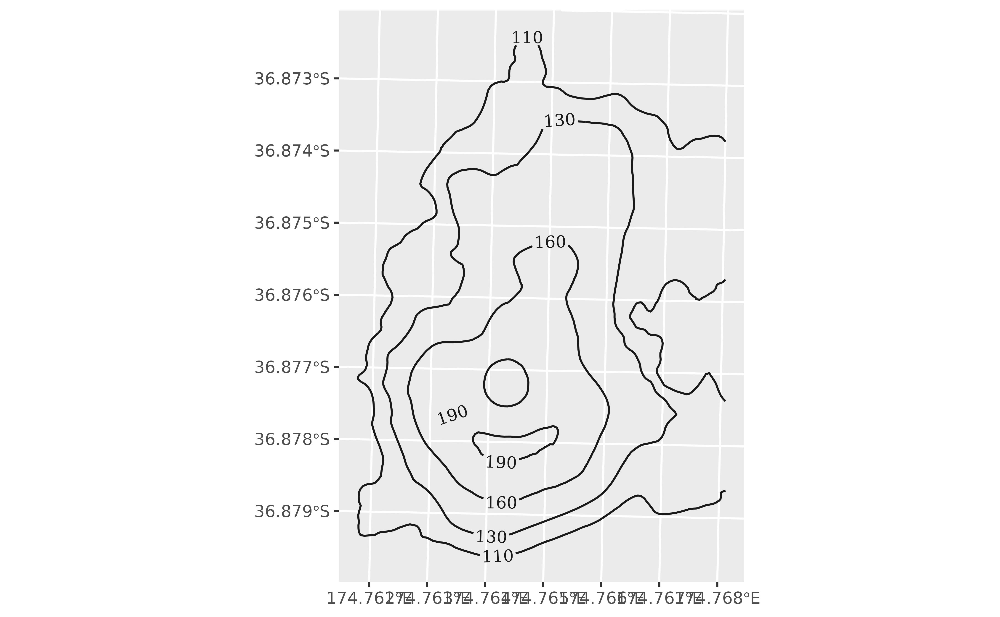
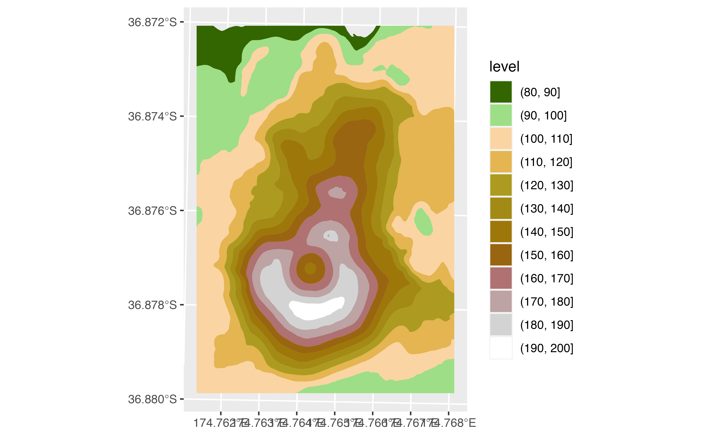
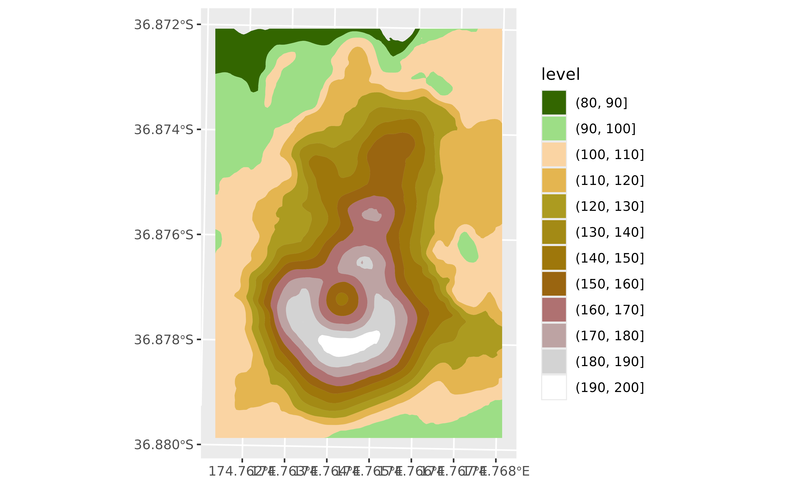

Plot SpatRaster contours
Source:R/geom_spat_contour.R, R/geom_spat_contour_fill.R
geom_spat_contour.RdThese geoms create contours of SpatRaster objects. To specify a valid
surface, you should specify the layer on aes(z = layer_name), otherwise all
the layers would be consider for creating contours. See also Facets
section.
The underlying implementation is based on ggplot2::geom_contour().
Usage
geom_spatraster_contour(
mapping = NULL,
data,
...,
maxcell = 5e+05,
bins = NULL,
binwidth = NULL,
breaks = NULL,
na.rm = TRUE,
show.legend = NA,
inherit.aes = TRUE
)
geom_spatraster_contour_filled(
mapping = NULL,
data,
...,
maxcell = 5e+05,
bins = NULL,
binwidth = NULL,
breaks = NULL,
na.rm = TRUE,
show.legend = NA,
inherit.aes = TRUE
)Arguments
- mapping
Set of aesthetic mappings created by
ggplot2::aes()orggplot2::aes_(). See Aesthetics specially in the use offillaesthetic.- data
A SpatRaster object.
- ...
Other arguments passed on to
layer(). These are often aesthetics, used to set an aesthetic to a fixed value, likecolour = "red"orsize = 3. They may also be parameters to the paired geom/stat.- maxcell
positive integer. Maximum number of cells to use for the plot.
- bins
Number of contour bins. Overridden by
binwidth.- binwidth
The width of the contour bins. Overridden by
breaks.- breaks
One of:
Numeric vector to set the contour breaks
A function that takes the range of the data and binwidth as input and returns breaks as output. A function can be created from a formula (e.g. ~ fullseq(.x, .y)).
Overrides
binwidthandbins. By default, this is a vector of length ten withpretty()breaks.- na.rm
If
TRUE, the default, missing values are silently removed. IfFALSE, missing values are removed with a warning.- show.legend
logical. Should this layer be included in the legends?
NA, the default, includes if any aesthetics are mapped.FALSEnever includes, andTRUEalways includes. It can also be a named logical vector to finely select the aesthetics to display.- inherit.aes
If
FALSE, overrides the default aesthetics, rather than combining with them.
Aesthetics
geom_spatraster_contour() understands the following aesthetics:
alpha
colour
group
linetype
linewidth
weight
Additionally, geom_spatraster_contour_filled() understands also the
following aesthetics, as well as the ones listed above:
fill
subgroup
Check ggplot2::geom_contour() for more info.
Computed variables
This geom computes internally some variables that are available for use as
aesthetics, using (for example) aes(color = after_stat(<computed>)) (see
ggplot2::after_stat()).
levelHeight of contour. For contour lines, this is numeric vector that represents bin boundaries. For contour bands, this is an ordered factor that represents bin ranges.
nlevelHeight of contour, scaled to maximum of 1.
lyrName of the layer.
level_low,level_high,level_mid(contour bands only) Lower and upper bin boundaries for each band, as well the mid point between the boundaries.
Coords
When the SpatRaster does not present a crs (i.e.,
terra::crs(rast) == "") the geom does not make any assumption on the
scales.
On SpatRaster that have a crs, the geom uses ggplot2::coord_sf() to adjust
the scales. That means that also the SpatRaster may be reprojected.
Facets
You can use facet_wrap(~lyr) for creating a faceted plot by each layer of
the SpatRaster object. See ggplot2::facet_wrap() for details.
See also
Other ggplot2 utils:
autoplot.Spat,
fortify.Spat,
geom_spatraster_rgb(),
geom_spatraster(),
ggspatvector,
stat_spat_coordinates()
Examples
# \donttest{
library(terra)
# Raster
f <- system.file("extdata/volcano2.tif", package = "tidyterra")
r <- rast(f)
library(ggplot2)
ggplot() +
geom_spatraster_contour(data = r)

ggplot() +
geom_spatraster_contour(
data = r, aes(color = after_stat(level)),
binwidth = 1,
size = 0.4
) +
scale_color_gradientn(
colours = hcl.colors(20, "Inferno"),
guide = guide_coloursteps()
) +
theme_minimal()

# Filled with breaks
ggplot() +
geom_spatraster_contour_filled(data = r, breaks = seq(80, 200, 10)) +
scale_fill_hypso_d()

# Both lines and contours
ggplot() +
geom_spatraster_contour_filled(
data = r, breaks = seq(80, 200, 10),
alpha = .7
) +
geom_spatraster_contour(
data = r, breaks = seq(80, 200, 2.5),
color = "grey30",
size = 0.1
) +
scale_fill_hypso_d()

# }